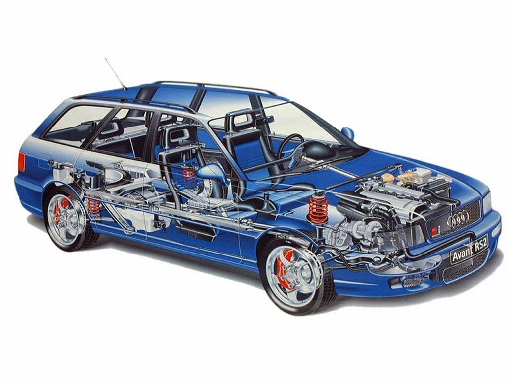
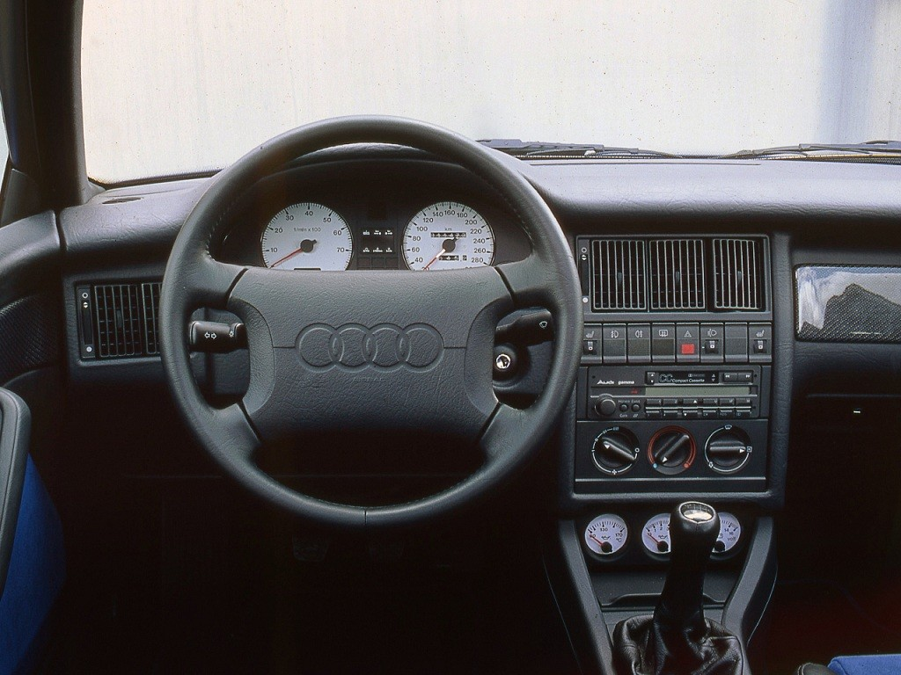

Наприкінці 80-х років компанію Porsche охопила кризу. Автомобілі марки продавалися дуже погано, внаслідок чого фірма зазнавала збитків, а виробництво знижувалося. Продажі з 50 тисяч автомобілів на рік упали до 14 тисяч. Це змусило компанію шукати альтернативні джерела фінансування. Виходом могла стати кооперація з Ауді та спільна робота над спортивною моделлю RS2.
RS2 випускалася на заводі Porsche у місті Цуффенхаузені з березня 1994 року до липня 1995 року. Інженери Порше перетворили динамічний Audi S2, на безкомпромісний спортивний універсал. У свою чергу S2 був побудований на базі стандартного універсала Audi 80 B4.
Насамперед фахівці Порше попрацювали над мотором. Його оснастили новими розподільчими валами, впускним колектором та турбонаддувом. Крім того, вони перепрограмували блок управління і замінили форсунки на більш продуктивні. Також встановили збільшений інтеркулер та радіатор. В результаті цих доробок двигун об'ємом 2,2-літра зміг видати значні 315 к.с., а крутний момент склав 410 Нм.
Гальмівна система також переробили, встановили 4-поршневі механізми Brembo. Від Порше 911 у кузові 964 запозичили бічні дзеркала та литі диски.
Центральною особливістю Audi RS2 була система повного приводу quattro, слава якої на всю гриміла в автоспорті. Ця всепогодна система другого покоління ґрунтувалася на міжосьовому самоблоці Torsen. При досягненні 25 км/год задній диференціал автоматично вимикався. За замовчуванням момент, що крутить, розподілявся у співвідношенні 50 на 50, проте міг перекидатися до 75% на вісь, яка мала краще зчеплення з дорогою.
У сукупності цих факторів динамічні характеристики автомобіля були приголомшливими! Тільки уявіть універсал розганявся за 4,8 секунд до 100 км/год, а рубіж в 50 км/год долав всього за 1,5 секунд. Крім того, максимальна швидкість 262 км/год, робила Audi RS2 королем серед німецької трійки. Наприклад, Mersedes і BMW обмежували максимальну швидкість своїх машин на позначці 250 км/год.
Спортивну підвіску Audi RS2 також суттєво переробили. Насамперед інженери, встановили доопрацьовані стабілізатори поперечної стійкості та амортизатори. Як наслідок, кліренс знизився до 96 мм. Роботи над підвіскою мали ефект, універсал відмінно справлявся, але в той же час був досить комфортний для повсякденної їзди.
Ауді RS2 має культовий статус серед автолюбителів у всьому світі. Він остаточно закріпив репутацію Audi як виробника високоякісних, швидкісних, але водночас практичних спортивних автомобілів. За півтора року виготовили 2891 цих чудових машин.